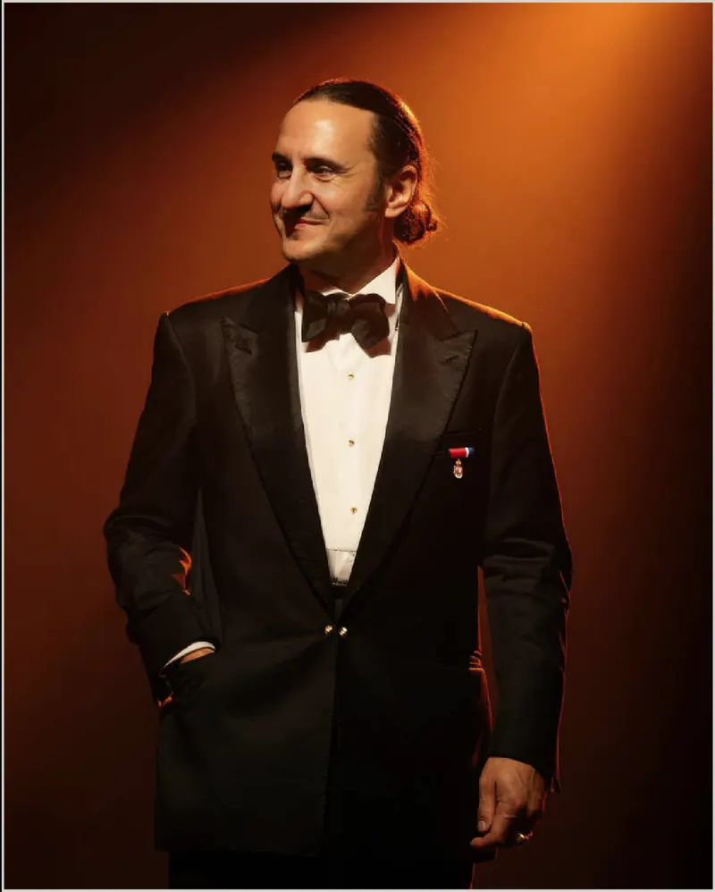

Luis Felipe Fernández-Salvador y Campodónico
Presidente fundador · VI marqués de Lises
Luis Felipe Fernández-Salvador y Campodónico, VI marqués de Lises, es el primer presidente fundador de The Embassy of Nature. Explorador, cineasta y activista ambiental, dirige la visión fundacional de la institución en cada uno de sus programas.
Su vida de exploración comenzó a los catorce años, en la tradición de una familia de aventureros. Sus expediciones, dedicadas a la preservación de culturas indígenas y civilizaciones ocultas, suman más de veintisiete años y han dado forma a la convicción que está en el centro de la institución: que el mundo natural es un sujeto de la diplomacia, no un objeto de consumo.
Dirigió la restauración sostenible del Hôtel Hérouet de París, sede de Casa Ecuador, y es fundador de Paracas Independent Films, donde desarrolló el «realismo fantástico», un género que une ficción y documental. Sus películas, entre ellas A Son of Man y Waorani: Guardians of the Amazon, abordan cuestiones sociales y ambientales urgentes.
Bajo su presidencia, The Embassy of Nature se presentó en las Naciones Unidas en 2023, se dio a conocer al mundo durante los Juegos Olímpicos de París 2024, llevó Casa Ecuador al Gran Premio de Fórmula 1 de Abu Dabi 2025 —el primer pabellón nacional de su tipo en ese escenario— y anunció el establecimiento de su sede permanente en Ginebra.
Distinciones
- Premio Eduardo Kingman al Mérito Cultural · 2018
- Gentleman Awards · Hombre del Año · 2019
- Golden Millennium Award · Festival ODS de las Naciones Unidas · 2024, entregado por Oliver Stone